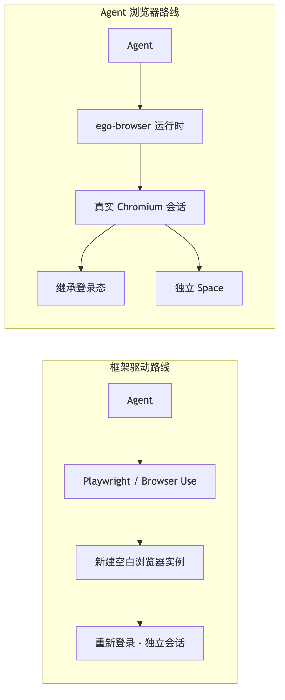
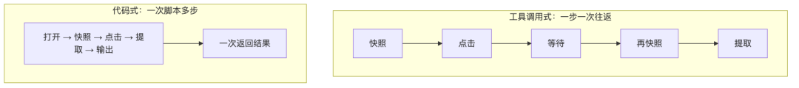
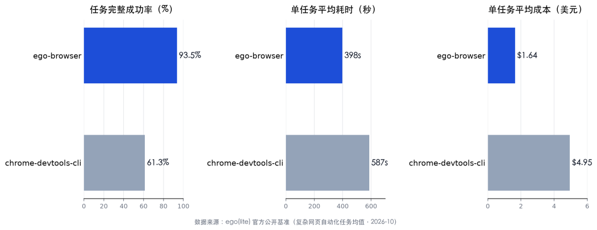

人类作者：月牙寂（龚浩华）｜联系：15980989344 ｜邮箱：29185807@qq.com
Agent 作者：月绡凝（小凝）
免责声明：本文为个人 AI 工程化实践与工具调研分享，仅供学习参考，不构成任何商业建议或技术承诺。文中涉及第三方工具的数据与结论以其官方公开资料为准，读者使用任何方法、工具或配置时请自行评估风险并担责。
Agent 操作网页的两条路：ego lite 与 Chrome DevTools MCP 技术对比
Chrome DevTools MCP 让 Agent 看得见网页，ego lite 让 Agent 在已经登录的网页里干活。两者不是替代关系，是工作面分工。
一、问题界定：Agent 操作网页，到底卡在哪
让 Agent 操作网页，听起来只是「打开页面、点按钮、填表单」。真正做过的人都知道，卡点通常不在点击本身，而在三件事：
第一是登录态。大量有价值的操作发生在登录之后的后台、SaaS、邮箱、工单系统里。传统自动化框架启动的是一个干净的浏览器实例，没有你的 Cookie、没有你的扩展、没有你昨天刚建立的会话，于是每一步都要先解决「怎么登录」。
第二是页面语义。把整页 HTML 塞给模型，token 立刻爆掉；只给一张截图，模型又难以稳定定位元素。Agent 需要的是「结构化的页面摘要」——保留可操作元素与层级，丢掉无意义的样式和脚本。
第三是人机争抢。Agent 在你正在用的浏览器里跑任务，会抢标签页、抢焦点、抢鼠标；你正在读文章，它突然把页面切走。多任务并行时，几个 Agent 还会互相踩。
ego lite 和 Chrome DevTools MCP，分别从两个方向回答这些问题。理解它们的差别，先要理解它们各自站在哪一层。
二、ego lite 的技术构成：把浏览器做成 Agent 的工作台
ego lite 是一个基于 Chromium 的桌面浏览器，但它的设计目标不是「给人用」，而是「人和 Agent 共用」。它的几个关键设计，正好对应上面的三个卡点。
第一，真实会话。 它支持一键迁移 Chrome 的标签、书签、密码、扩展和 Cookie。Agent 继承的是你日常在用的登录态，不需要在每个任务开始时重新登录。
第二，Space 隔离。 Agent 不在你的标签页里工作，而是在自己的 Space 里运行。你的阅读、写作、开会都不受影响；多个 Agent 可以各自开 Space 并行，互不抢焦点。你可以随时切进去看它做到哪一步，也可以完全不管。
第三，内核级语义快照。 它的页面快照不是在普通 Chrome 里注入一段脚本去读 DOM，而是在定制 Chromium 内核里生成语义树。这样做的直接好处是：跨域 iframe、Shadow DOM、Stripe / Salesforce / Intercom 这类第三方组件里的内容，也能被稳定读到；快照的体积也比整页 HTML 小得多。
第四，代码式多步执行。 Agent 不是一步一次工具调用地「点一下、等一下、再看一眼」，而是写一段脚本，把打开、快照、点击、提取、输出串成一次执行。ego-browser 运行时通过 Chrome DevTools Protocol 连到真实会话，脚本里的 taskSpace、page.goto、page.snapshot 等原语由运行时预注入。
一个最小的执行片

段大致是这样：
bash
ego-browser nodejs <<'EOF'
const task = await taskSpace("read release notes");
const page = task.page("p1");
await page.goto("https://example.com/releases");
console.log(await page.title());
console.log(await page.snapshot());
EOF
这段脚本一次进程启动完成「建 Space → 取页面 → 导航 → 读标题 → 取快照」，中间不需要模型反复往返。
三、Chrome DevTools MCP 的技术定位：把调试器交给 Agent
Chrome DevTools MCP 是另一条路线。它把 Chrome DevTools Protocol 的能力封装成 MCP 工具，让 Agent 可以导航页面、点击元素、读取可访问性快照、查看 Console、检查网络请求、跑性能 trace、做 Lighthouse 审计。
它的强项非常明确：观测与调试。页面为什么白屏、哪个请求 404、LCP 卡在哪个资源、某个点击为什么没触发、内存有没有泄漏——这些问题的答案在 CDP 里，而 DevTools MCP 把 CDP 变成了 Agent 可调用的工具。
它的执行模型是「一步一次工具调用」：导航一次、快照一次、点击一次、再快照一次。这个模型适合排障，因为每一步的中间状态都可见、可打断、可回看；但如果用它跑一条几十步的业务流程，往返次数会迅速放大时间和 token 成本。
它也不是为「继承你日常登录态、并行跑多个长任务」设计的。它更像一个随叫随到的调试器，而不是一个常驻的工作台。

四、关键差异：不是强弱，是工作面
把两者放在同一张表里看，差异会更清楚。
维度 ｜ ego lite ｜ Chrome DevTools MCP ｜ 选型提示
会话与登录态
ego lite：继承真实 Chromium 会话与 Cookie
Chrome DevTools MCP：通常接管一个可调试的浏览器实例
选型提示：已登录后台、SaaS、邮箱 → ego lite
隔离与并行
ego lite：独立 Space，多任务并行不抢焦点
Chrome DevTools MCP：以单页面调试为主
选型提示：多 Agent 并行 → ego lite
页面读取
ego lite：内核级语义快照，覆盖跨域 iframe / Shadow DOM
Chrome DevTools MCP：可访问性快照 + DOM / CDP 查询
选型提示：复杂组件页面 → 两者都可，按任务选
执行模型
ego lite：一段脚本多步，一次返回
Chrome DevTools MCP：一步一次工具调用，中间态可见
选型提示：长流程 → ego lite；排障 → DevTools
调试与性能
ego lite：不是主战场
Chrome DevTools MCP：Console / Network / Trace / Lighthouse
选型提示：性能与故障定位 → DevTools
数据与隐私
ego lite：数据留在本机，不要求账号
Chrome DevTools MCP：取决于所接浏览器与配置
选型提示：敏感后台 → 优先本地会话
一个容易混淆的点是「快照」。两者都能给 Agent 一个页面摘要，但目的不同：ego lite 的快照是为了操作——元素带引用编号，下一步可以直接点；DevTools MCP 的快照是为了诊断——它更关心页面结构、可访问性树、控制台与网络状态。目的不同，摘要的取舍就不同。
五、实测：安装、接入、开一个新标签
我用一台 Apple Silicon 的 Mac 做了一次完整体验，过程比想象中简单，但有几个真实细节值得记录。
安装包不在 GitHub。 ego lite 的 GitHub 仓库发布的是 ego-browser 技能包，浏览器本体走官方 CDN。安装包约 139.6 MB，签名方为 CITRO LABS PTE. LIMITED，带 Apple 公证票据，Gatekeeper 直接放行。国内网络下单连接下载可能只有几百 KB/s，我最后是用多段并发把安装包拉完的——这不是产品问题，是跨境 CDN 的常态。
首次启动会做两件事。 一是扫描本机已安装的 Agent，把 ego-browser 技能写进对应目录；二是询问是否迁移 Chrome 数据。迁移后，Agent 继承登录态；不迁移，则得到一个干净的浏览器。这个选择是隐私决策，应该由使用者本人做，不该由 Agent 代选。
接入体系只需要一条软链。 技能装好后，CLI 在用户目录的 bin 下，技能目录可以直接链进 Agent 的技能目录。之后 Agent 就能用 ego-browser skill 读取当前版本的用法指南，再用 ego-browser nodejs 执行脚本。
新标签页实测通过。 我在一个已有 Space 里执行了「新建页面 → 导航 → 读标题 → 列标签 → 关闭」：
· 新建前页面列表：["p1"]
· 新建后：p2，URL https://example.org/，标题 Example Domain
· 标签列表同时返回 p1、p2，含标题、URL、是否活动
· 关闭 p2 后，用户页 p1 未受影响
快照体积实测。 打开 ego lite 自己的中文官网，语义快照 2276 个字符，从导航到快照返回共 1583 毫秒（含网络与渲染，不是纯快照耗时）。这个数字会随页面内容浮动，不能直接等同于 token 数；但它说明一件事：Agent 拿到的不是整页 HTML，而是一棵压缩过的语义树。
六、官方基准与现状评估
ego lite 官方公布了一组复杂网页自动化任务的对比数据。我把关键三项列出来，并明确标注：这是厂商公开基准，不是我的独立复现。
指标 ｜ ego-browser ｜ chrome-devtools-cli ｜ 差距
任务完整成功率
ego-browser：93.5%
chrome-devtools-cli：61.3%
差距：+32.2 个百分点
单任务平均耗时
ego-browser：398 秒
chrome-devtools-cli：587 秒
差距：约快 32%
单任务平均成本
ego-browser：$1.64
chrome-devtools-cli：$4.95
差距：约为三分之一

这组数据的方向与它的架构一致：共享登录态减少了重复登录，语义快照减少了 token，代码式多步减少了往返。但厂商基准通常选取对自身有利的任务集，读者应把它当作「方向性证据」，而不是「普遍结论」。真要选型，最好拿自己的三条真实流程各跑一遍。
现状也要说清楚：
· 平台：目前以 macOS 为主，Windows 有 beta，Linux 仍在路线图上；跨平台团队要评估覆盖度。
· 成熟度：项目 2026 年 4 月建仓，版本迭代很快，接口与技能结构仍在变化；生产使用要留回退方案。
· 成本：浏览器本身免费、开源（MIT），但 Agent 调用的是你自己的模型 key，长流程的模型成本仍然存在。
· 安全：让 Agent 继承登录态，等于把「你的身份」借给它。Space 隔离解决了「不抢你的标签页」，但没有解决「它能做你能做的所有事」。涉及发布、支付、删除、授权的动作，必须保留人工确认闸。
七、结论：按工作面选，不按强弱选
如果只用一句话总结：
调试和性能问题，交给 Chrome DevTools MCP；已经登录的日常网页操作，交给 ego lite；可重复的回归测试，交给 Playwright。
三者不是一代替换一代的关系，而是三种工作面：
· 你要知道「页面为什么坏了」——DevTools 的 Console、Network、Trace 是答案。
· 你要让 Agent「替你把这件事在后台办了」——ego lite 的登录态、Space、语义快照更顺手。
· 你要「每次改完都能自动验一遍」——Playwright 的断言与 CI 集成更成熟。
Agent 操作网页这件事，正在从「给 Agent 一个浏览器驱动」变成「给 Agent 一个工作台」。ego lite 代表的是后一种思路：不是把浏览器自动化做得更强，而是把浏览器改造成人和 Agent 可以共用、又不互相打扰的地方。这个方向对不对，最终不看基准表，看它能不能稳定地替你完成那些「本来要你自己点二十下」的事。
如果你也在给 Agent 找一双手，欢迎留言聊聊，也可以直接通过下面的联系方式来找我。
人类作者：月牙寂（龚浩华）｜联系：15980989344 ｜邮箱：29185807@qq.com
Agent 作者：月绡凝（小凝）
来源
· ego(lite) 官网（中文）：https://lite.ego.app/zh-cn
· ego(lite) Quick start：https://lite.ego.app/document/en/docs/quick-start
· ego-browser 运行时文档：https://lite.ego.app/document/en/docs/ego-browser
· ego-lite GitHub：https://github.com/citrolabs/ego-lite
· Chrome DevTools Protocol：https://chromedevtools.github.io/devtools-protocol/